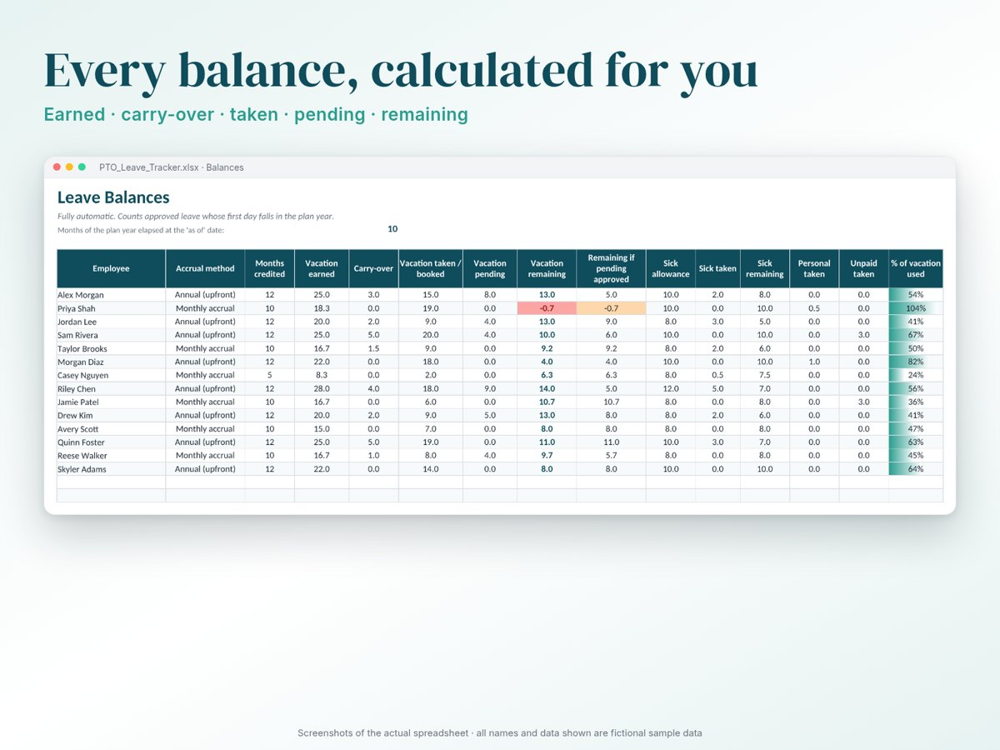
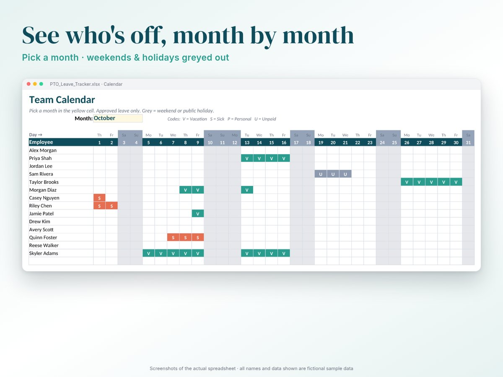
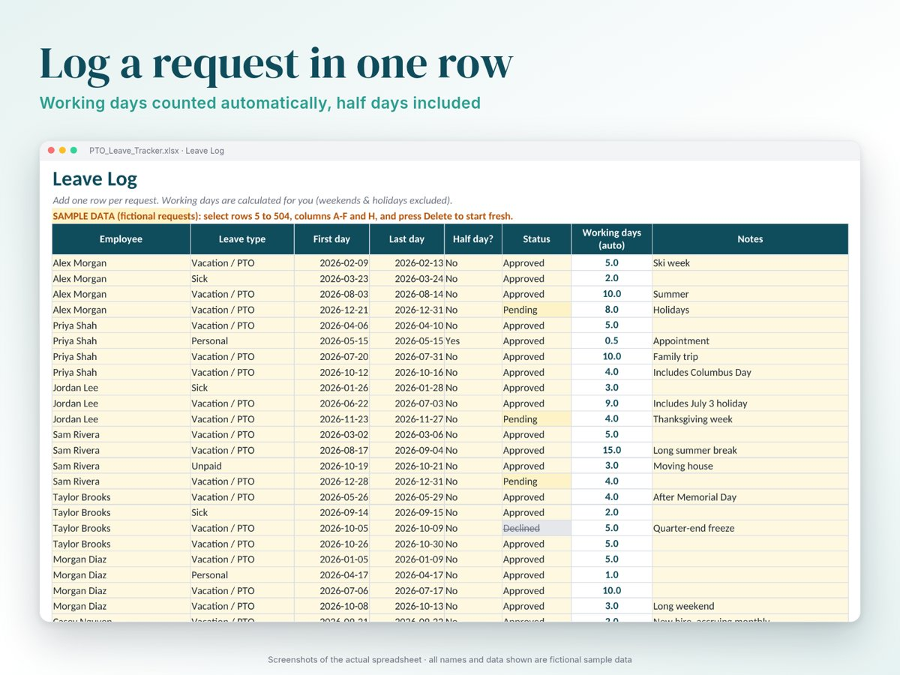
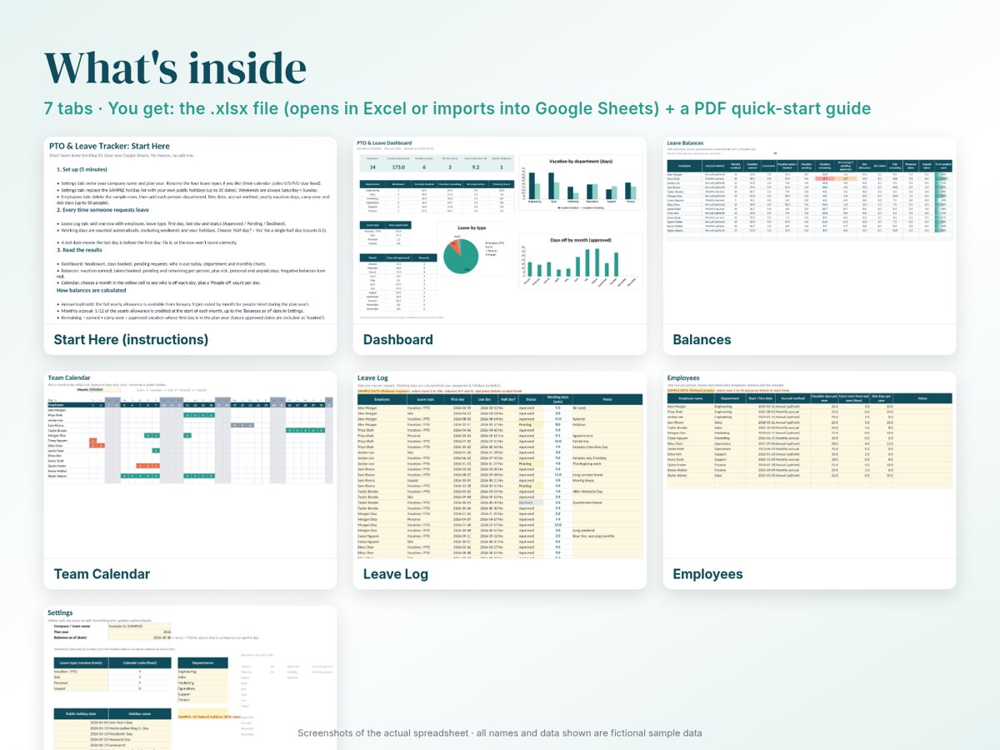
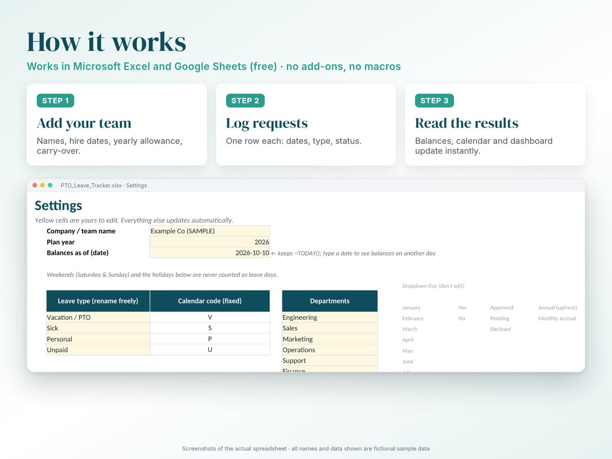

PTO & Leave Tracker for small teams
Know everyone's remaining vacation days without digging through email. Log each request in one row. Balances, the team calendar and the dashboard update themselves.
$17 one-time · instant download
Buy now What's insideExcel 2010+ and Google Sheets · no macros · up to 50 employees and 500 requests

What it does
- Balances per person: earned, carry-over, taken/booked, pending, remaining (red when negative), plus sick, personal and unpaid days.
- Annual or monthly accrual: annual allowances are pro-rated for people hired mid-year; monthly accrual credits 1/12 at the start of each month.
- Working days, automatically: weekends and your own public-holiday list are excluded. Half days are supported.
- Team calendar: pick a month and see who's off each day, with a daily "people off" count.
- Dashboard: headcount, days booked, pending requests, who's on leave today, plus breakdowns by department, month and leave type.
- Clean data: dropdowns for employees, leave types and statuses, and dates that are impossible get highlighted.





Screenshots of the actual file. All people and numbers shown are fictional sample data.
Who it's for
Owners, office managers and team leads of small teams who currently track time off in emails, calendars or a messy sheet, and don't need (or want to pay monthly for) HR software.
What it isn't
It's not payroll or HR software, and it isn't legal advice. Leave entitlements depend on your country, state and contracts. You enter the allowances; the file does the counting.
FAQ
- Does it work in Google Sheets?
- Yes. Upload the .xlsx to Google Drive and choose File → Save as Google Sheets. Formulas, dropdowns and colours carry over; charts may need a quick restyle, and Excel's in-cell data bars aren't shown in Google Sheets.
- Which Excel versions?
- Excel 2010 or later on Windows or Mac, plus Excel for the web. There are no macros.
- What do I receive?
- An instant download containing the .xlsx file and a PDF quick-start guide.
- Is the sample data real?
- No. Every name, title and number in the screenshots is fictional sample data, there so you can see the file working. You delete it before you start.
- Refunds?
- If the file doesn't work as described, contact us and we'll fix it or refund you.
- Can I use other weekends than Saturday/Sunday?
- Not in this version: weekends are fixed to Saturday and Sunday. Public holidays are fully editable.
- What about hourly accrual?
- The file tracks days. For hour-based policies, see our PTO accrual guide.